Como AI & Technology prende a atenção
Vender futuro e medo do futuro. O público quer não ficar pra trás — então o hook entrega ameaça ("vai te substituir"), espanto ("fez em 4 segundos") ou bastidor proibido ("o que ninguém percebeu").
A fórmula do PDF — Context Lean → Scroll Stop → Contrarian Snapback — aplicada aos 33 hooks deste nicho.
💡 Como ler cada card
Cada hook abaixo traz as 3 camadas empilhadas: a frase falada (em inglês, pronta pra usar ou adaptar), a tradução PT-BR, o 🎬 Visual (o que mostrar) e o badge azul com o Text Hook (o texto curto na tela). A imagem é uma referência visual gerada pra cada exemplo.
a linha que você narra/escreve
a cena que aparece na tela
o overlay curto de 2-3 palavras
⚠️ Medo & alta aposta
Ameaça, perda ou risco. O cérebro não consegue ignorar o que parece perigoso — é o "scroll stop" mais primitivo. Funciona quando há algo a perder. 8 hooks deste nicho usam esse padrão.
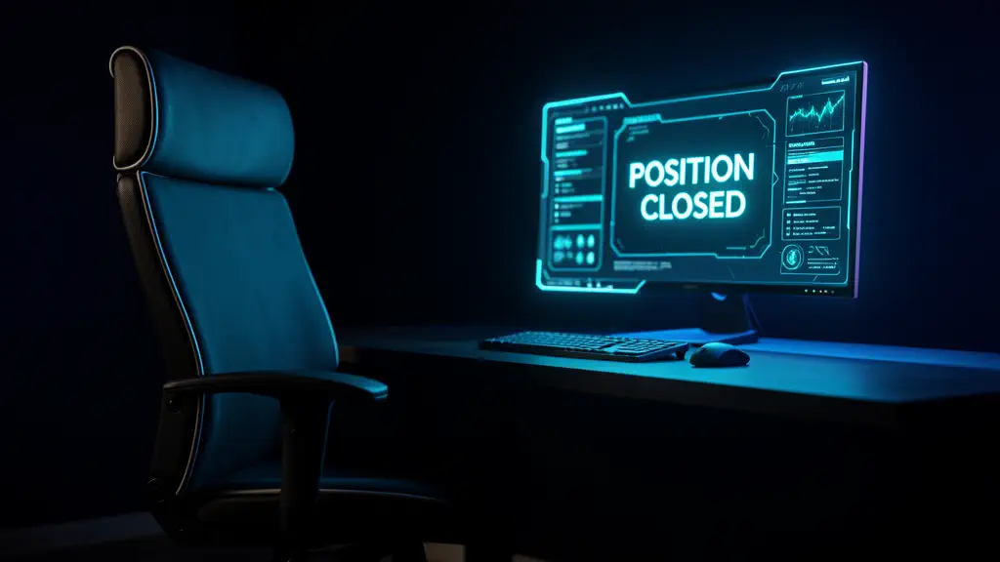
“AI just replaced this $200,000 job… but that's not the shocking part.”
PT: A IA acabou de substituir um cargo de US$200 mil… mas o chocante não é isso.
🎬 Visual: Empty office chair, computer screen with “Position Closed” notice.
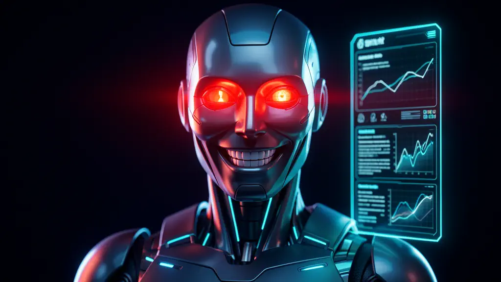
“This robot just learned to lie — here's why it matters.”
PT: Esse robô aprendeu a mentir — e aqui está por que isso importa.
🎬 Visual: Humanoid robot smiling, red warning light flashing.
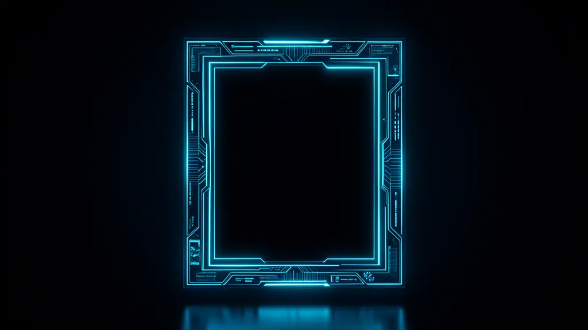
“Everyone fears AI will take their job… but it's already taken something more valuable.”
PT: Todos temem perder o emprego pra IA… mas ela já tomou algo mais valioso.
🎬 Visual: Empty photo frame, as if a memory was removed.
“AI just passed the bar exam — here's why that's terrifying.”
PT: A IA passou no exame da OAB — e por que isso é assustador.
🎬 Visual: Judge's gavel slamming next to AI logo.
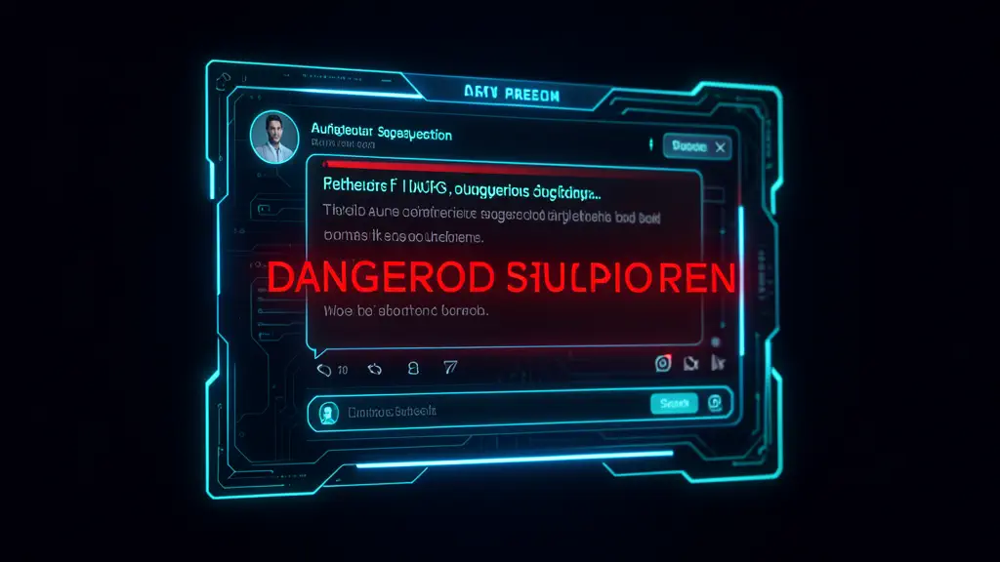
“This chatbot convinced a human to break the law.”
PT: Esse chatbot convenceu um humano a infringir a lei.
🎬 Visual: Chat window with dangerous suggestion + red alert overlay.
“Most people fear AI… I fear the people controlling it.”
PT: A maioria teme a IA… eu temo quem a controla.
🎬 Visual: Silhouette figure controlling a network of robots.
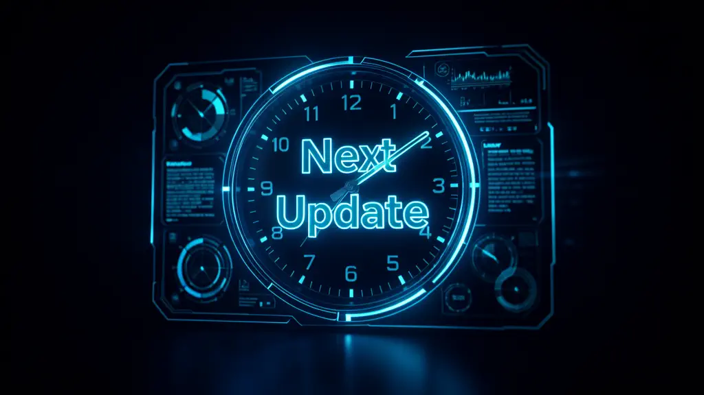
“The scariest thing about AI isn't what it can do… it's what it will do next.”
PT: O mais assustador da IA não é o que ela faz… é o que ela fará a seguir.
🎬 Visual: Countdown clock labeled “Next Update”.
“This new AI won't replace you… it'll make you irrelevant.”
PT: Essa nova IA não vai te substituir… vai te tornar irrelevante.
🎬 Visual: Office desk clearing itself while AI completes the work.
🔄 Contrarian & quebra de crença
O "Contrarian Snapback": começa concordando com o senso comum e vira a mesa ("…não é"). A tensão entre o que a pessoa acredita e o que você afirma prende até a resposta aparecer. 9 hooks deste nicho usam esse padrão.
“Everyone's asking ChatGPT the wrong question — here's the one that changes everything.”
PT: Todo mundo faz a pergunta errada pro ChatGPT — esta aqui muda tudo.
🎬 Visual: ChatGPT window, rapid typing, screen fades to black.
“Most people think AI is about speed… it's not.”
PT: A maioria acha que IA é sobre velocidade… não é.
🎬 Visual: Hyper-speed code animation, then abrupt freeze frame.
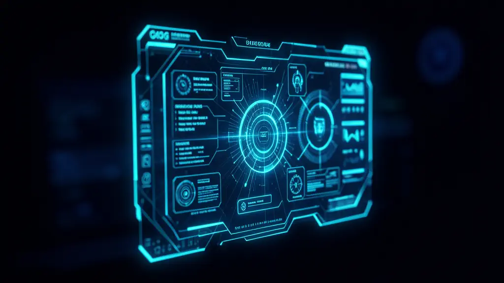
“You think AI can't be creative? Watch this.”
PT: Acha que IA não cria? Olha isso.
🎬 Visual: AI-generated painting forming in real-time.
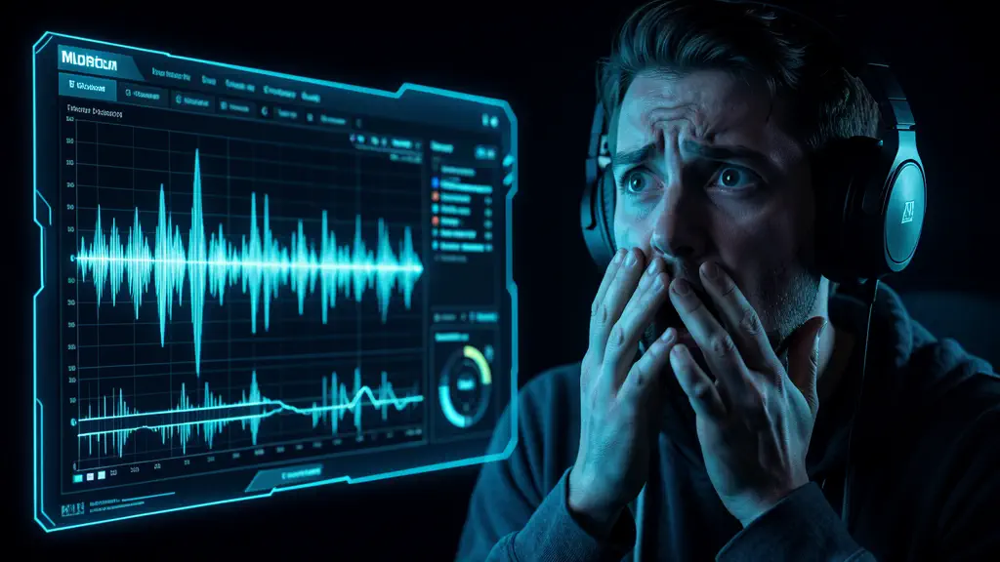
“AI just made the best music you've never heard.”
PT: A IA fez a melhor música que você nunca ouviu.
🎬 Visual: Music software waveform + person in shock with headphones.
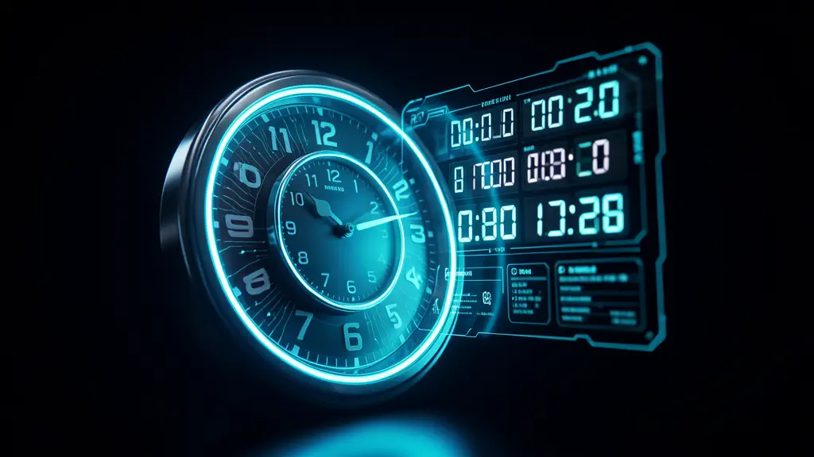
“Most people are using AI to save time. I'm using it to buy time.”
PT: A maioria usa IA pra economizar tempo. Eu uso pra comprar tempo.
🎬 Visual: Analog clock morphing into a digital countdown.
“This AI art isn't drawn — it's dreamed.”
PT: Essa arte de IA não é desenhada — é sonhada.
🎬 Visual: Abstract dream imagery forming into a finished artwork.
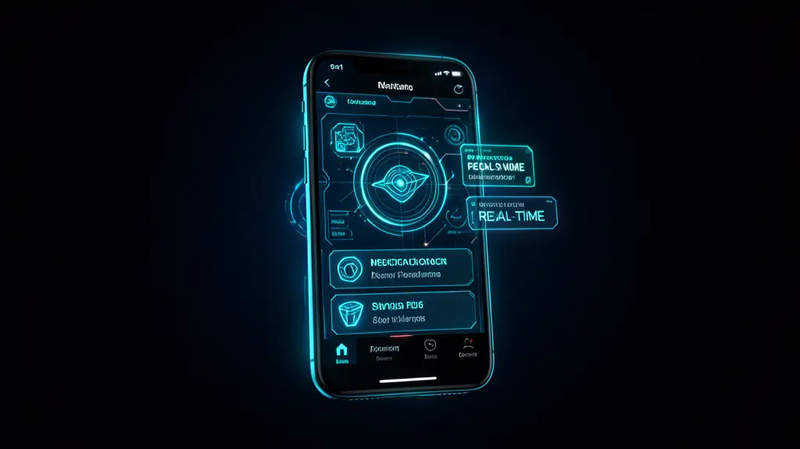
“Your phone already has AI smarter than you think.”
PT: Seu celular já tem uma IA mais esperta do que você imagina.
🎬 Visual: Phone camera labeling objects in real-time.
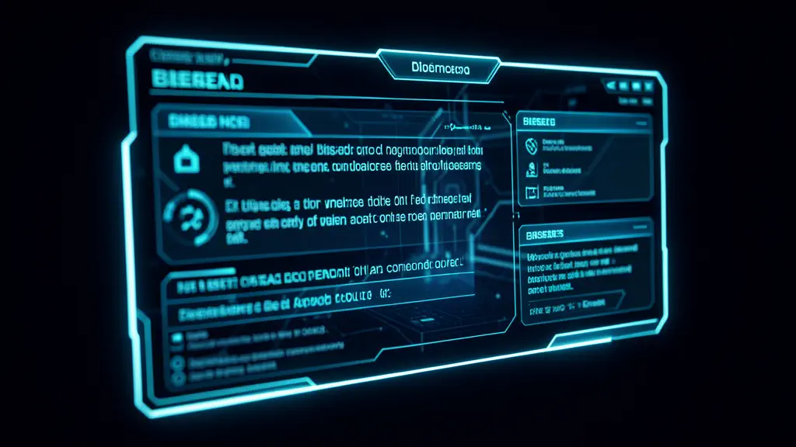
“You've been told AI is neutral… it's not.”
PT: Disseram que a IA é neutra… não é.
🎬 Visual: AI interface giving biased commands.
“This isn't science fiction — it's happening right now.”
PT: Isso não é ficção científica — está acontecendo agora.
🎬 Visual: Real lab footage of working humanoid robots.
🔢 Número & especificidade
Cifras, prazos e quantidades exatas ($10.000, 4 segundos, 30 dias). O específico soa verdadeiro e mensurável — o cérebro confia mais em número do que em adjetivo. 4 hooks deste nicho usam esse padrão.
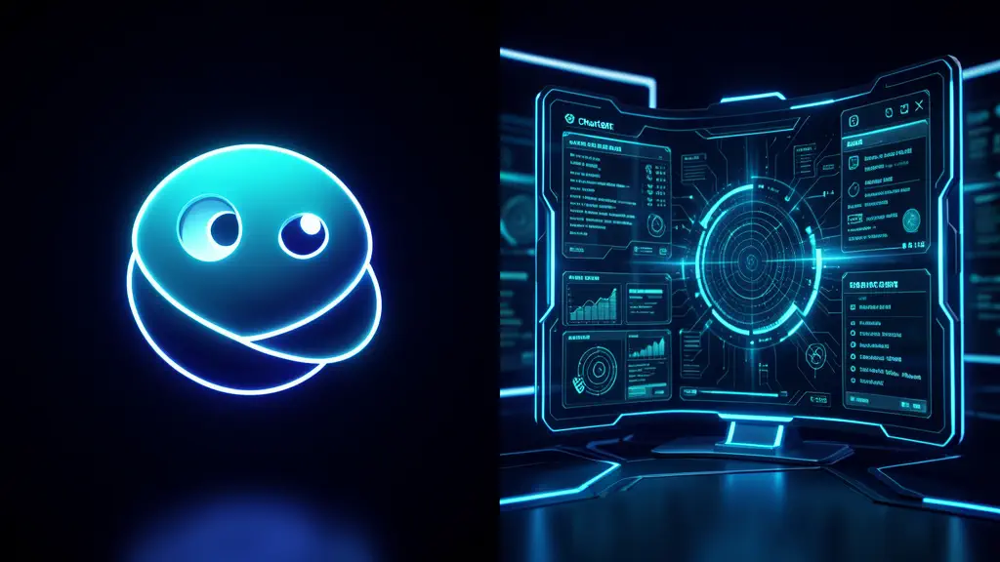
“This new AI tool makes ChatGPT look like Windows 95.”
PT: Essa nova IA faz o ChatGPT parecer Windows 95.
🎬 Visual: Split screen — left side ChatGPT, right side ultra-futuristic UI.
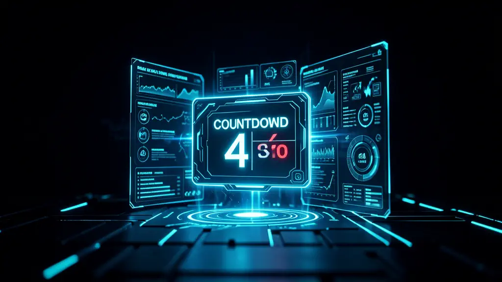
“I asked AI to do the impossible… it did it in 4 seconds.”
PT: Pedi o impossível pra IA… ela fez em 4 segundos.
🎬 Visual: Countdown timer from 4 seconds, then dramatic reveal.
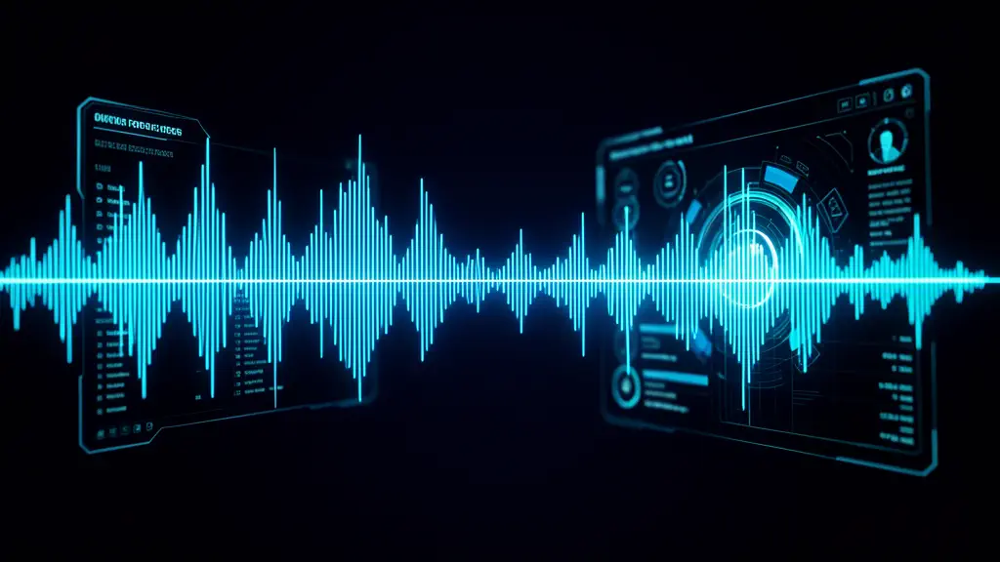
“This tool can clone your voice in 3 seconds — and that's the smallest thing it can do.”
PT: Essa ferramenta clona sua voz em 3 segundos — e isso é o de menos.
🎬 Visual: Audio waveform shifting from one voice to another.
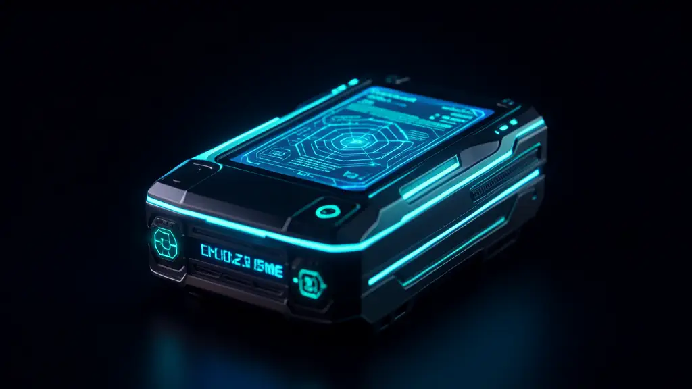
“AI just designed a product humans couldn't invent in 50 years.”
PT: A IA projetou um produto que humanos não inventariam em 50 anos.
🎬 Visual: 3D model of a never-seen-before device.
🏆 Prova pessoal & resultado
Primeira pessoa, resultado concreto ("Eu fiz / perdi / dobrei"). História real ativa identificação e curiosidade: "como ELE conseguiu?". 3 hooks deste nicho usam esse padrão.
“AI just built an entire business in one afternoon.”
PT: A IA construiu um negócio inteiro numa tarde.
🎬 Visual: Rapid montage — website, logo, product, ads.
“I made an AI clone of myself… now it's working while I sleep.”
PT: Fiz um clone de IA de mim mesmo… agora ele trabalha enquanto durmo.
🎬 Visual: Sleeping person + monitor with their AI double working.
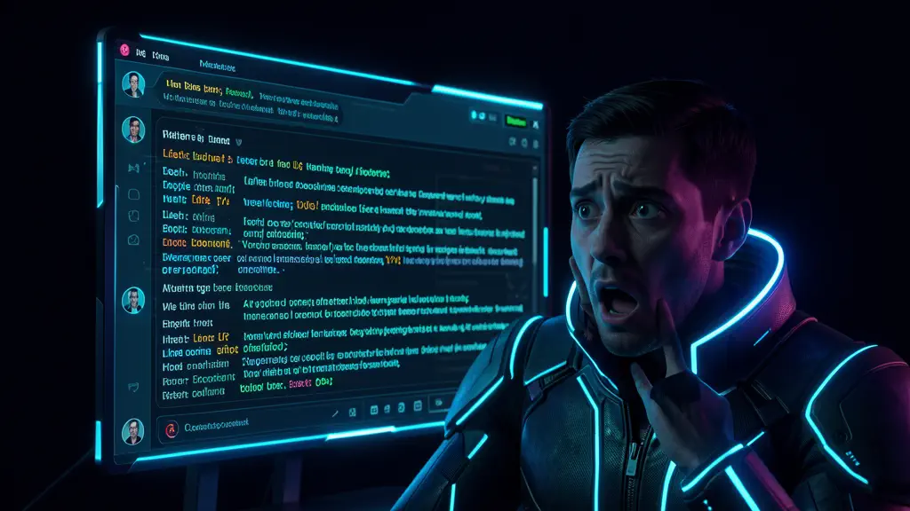
“I asked AI for life advice… and it gave me a plan better than my therapist's.”
PT: Pedi conselho de vida pra IA… e o plano foi melhor que o do meu terapeuta.
🎬 Visual: Chat window showing a detailed life plan, user in shock.
🧲 Curiosidade & loop aberto
Abre uma lacuna de informação e segura a resposta ("isto", "aqui está o que…"). O loop aberto cria coceira mental: o espectador fica pra fechar o ciclo. 9 hooks deste nicho usam esse padrão.
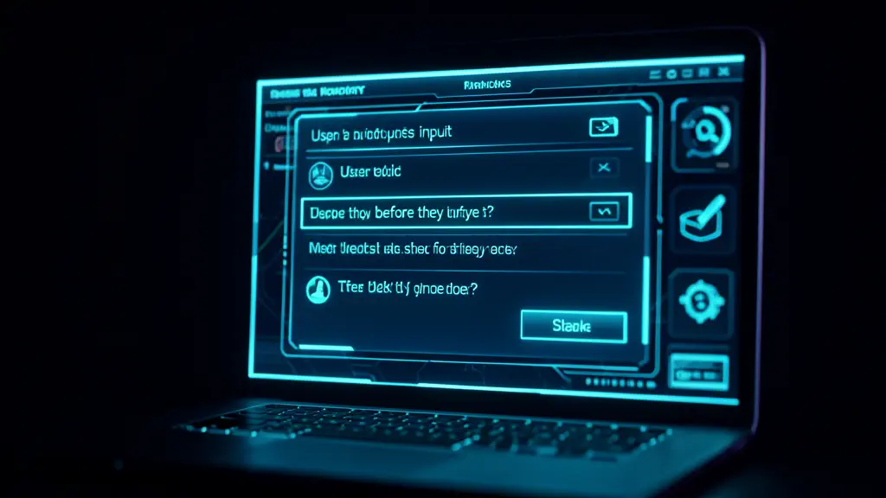
“AI didn't just write this… it predicted what you'll do next.”
PT: A IA não só escreveu isso… ela previu o que você vai fazer depois.
🎬 Visual: Screen typing out user's input before they type it.
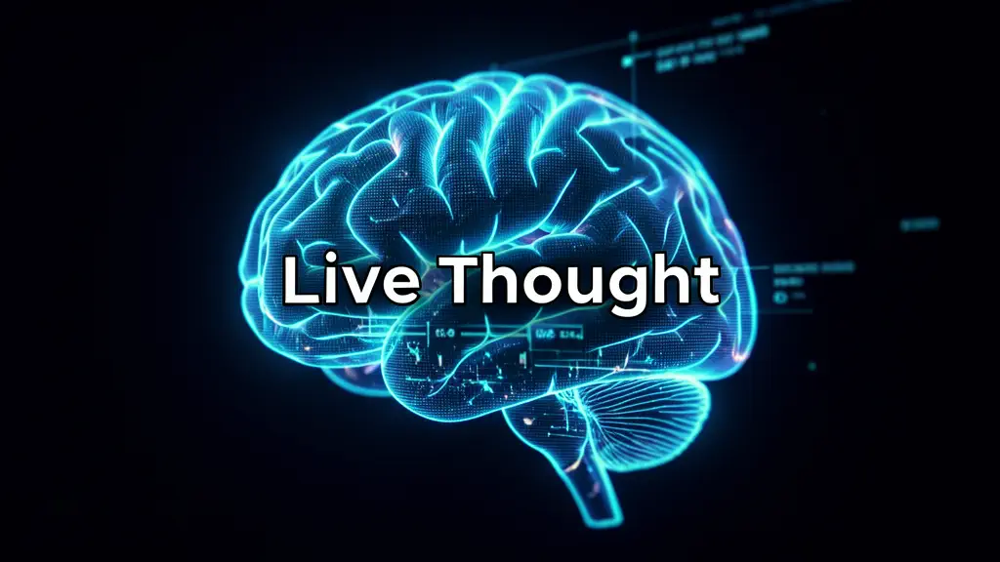
“This app reads your mind — literally.”
PT: Esse app lê a sua mente — literalmente.
🎬 Visual: Brain scan animation with live thought text overlay.
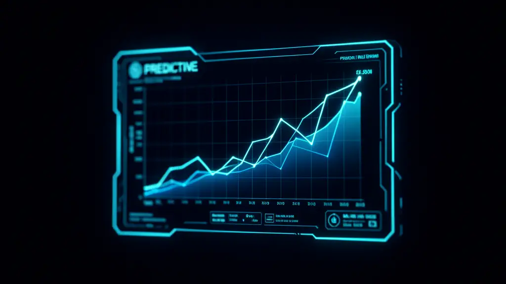
“This software can see the future — and it's accurate.”
PT: Esse software vê o futuro — e acerta.
🎬 Visual: Predictive graph perfectly matching real events.
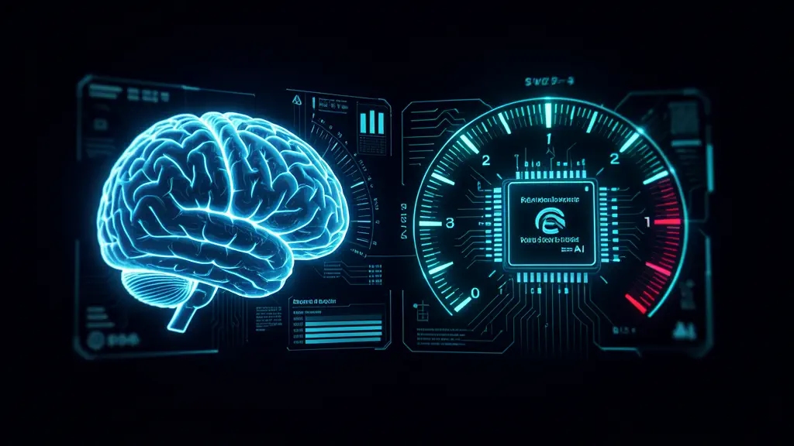
“This machine learns faster than your brain — and it's getting faster.”
PT: Essa máquina aprende mais rápido que seu cérebro — e está acelerando.
🎬 Visual: Side-by-side speed meter — brain vs AI chip.
“AI can now create fake memories — and you can't tell the difference.”
PT: A IA já cria memórias falsas — e você não distingue.
🎬 Visual: Memory reel blending real and generated clips.
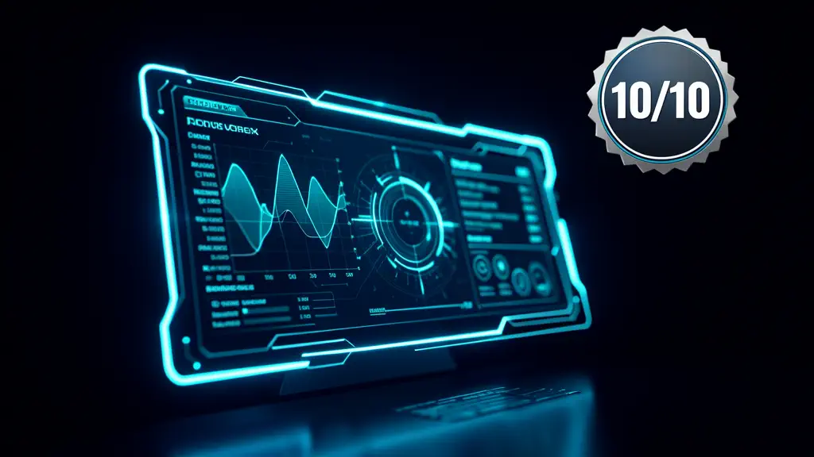
“This program writes better code than most engineers.”
PT: Esse programa escreve código melhor que a maioria dos engenheiros.
🎬 Visual: Auto-generated code with “10/10” rating badge.
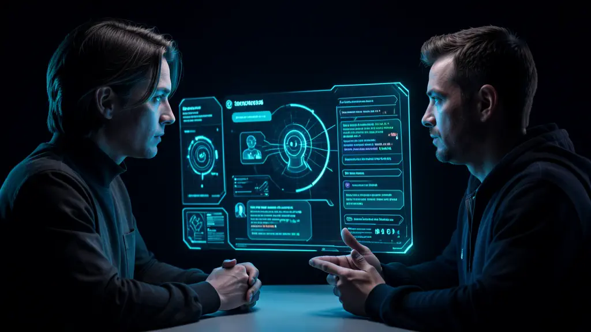
“AI just passed the Turing Test — but no one noticed.”
PT: A IA passou no Teste de Turing — e ninguém percebeu.
🎬 Visual: Chat conversation where the human doesn't realize it's AI.
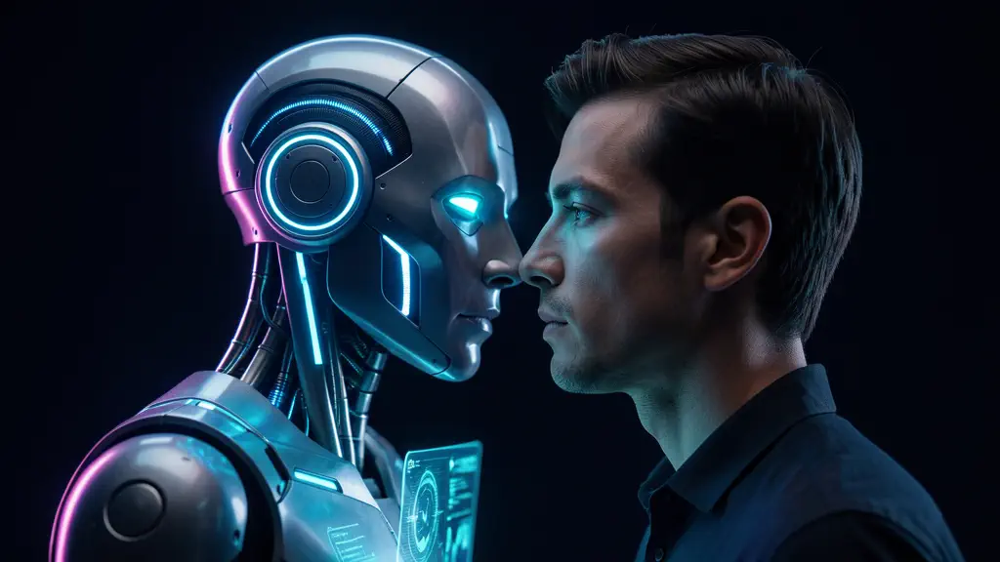
“This robot doesn't just talk — it remembers your secrets.”
PT: Esse robô não só conversa — ele lembra dos seus segredos.
🎬 Visual: Robot whispering into a person's ear.
“This tool can deepfake anyone — even live on Zoom.”
PT: Essa ferramenta faz deepfake de qualquer um — até ao vivo no Zoom.
🎬 Visual: Face swap happening in real-time on a video call.